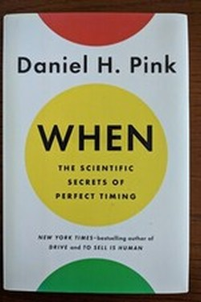

Library › Productivity
When — Summary & Key Lessons

The scientific secrets of perfect timing — because when you do things matters as much as how.
📖 OPEN THE FULL INTERACTIVE BREAKDOWN →🌐 Read it in Hindi, Hinglish, Gujarati, Tamil & 22 more languages — free, with audio.
💡 The Big Idea
Pink synthesises the science of timing into a practical system: the day has a three-part arc (peak, trough, recovery), driven by circadian rhythms; beginnings and endings disproportionately shape how we feel; and synchronising with others (or with music, or with groups) amplifies effort. The book's promise: you cannot add hours, but you can place them better.
🧠 The 9 Key Lessons
Lesson 1: The Three-Act Day
Chapter 1: The Arc
For most people the day runs peak-trough-recovery: analytical work in the morning (peak), admin and routine at midday (trough), creative and mood work in the late afternoon (recovery). Night owls run the opposite arc. The insight is not a fixed schedule but a matching rule: put your hardest cognitive work in your personal peak.
📖 Example: A writer who schedules email at 2 pm and prose at 9 am gets more good sentences from the same day. Read the full example →
⚡ Do this: Map your energy for one week (rate 1-10 each hour) and move your hardest task into the peak slot.
Lesson 2: Troughs Are for Admin, Not Decisions
Chapter 2: The Trough
The midday trough is real — vigilance and mood dip — yet it is when hospitals make the most anaesthesia errors and courts issue the most lenient decisions. The practical rule: avoid important decisions in the trough; schedule routine, mechanical work there; take a real break (not a desk scroll) to reset.
📖 Example: A surgeon who schedules elective cases in the morning avoids the peak-error afternoon window. Read the full example →
⚡ Do this: Move your least important task to the trough, your pivotal decision to the peak, and add one genuine break.
Lesson 3: Beginnings and Endings Rule Us
Chapter 3: Starts and Finishes
We remember beginnings (first impressions are disproportionate) and endings (peak-end rule) far more than middles. Pink's applications: start new projects at clean temporal landmarks (Mondays, months, birthdays — the 'fresh start effect'), and design ends deliberately — last day of a job, final message of a visit, last rep of a workout.
📖 Example: People are 82% more likely to start gym programmes after a fresh start date — birthdays and Mondays matter. Read the full example →
⚡ Do this: Pick one change and anchor it to a real fresh-start date — then write how you want it to end.
Lesson 4: The Power of a Break — and the Right Kind
Chapter 4: Breaks
Breaks are not optional; they are performance technology. The best are frequent (every 60-90 minutes), away from the desk, and restorative: movement (not Instagram). Naps of 10-20 minutes restore alertness without grogginess; the 'nappuccino' — coffee then a 15-minute nap — works because caffeine peaks as you wake.
📖 Example: The 90-minute ultradian rhythm means the fifth consecutive hour of work is mostly wasted — a 10-minute walk outperforms it. Read the full example →
⚡ Do this: Set a 60-90 minute work block, then a genuine 5-10 minute movement break — every single block.
Lesson 5: Sync, Then Flow
Chapter 5: Together
Timing is social: groups that synchronise (rowing crews, choirs, marching) raise pain tolerance and cooperation; music tempo shapes exercise output; shared rituals bond teams. The modern gem: before a hard meeting, a moment of collective alignment — even a shared count-in — moves the group's performance.
📖 Example: Rowers synchronise their stroke and pain tolerance rises; the same principle runs through teams that start together. Read the full example →
⚡ Do this: Start your next meeting with one minute of shared alignment (a goal sentence, a count-in) — and feel the difference.
Lesson 6: Syncing: The Hidden Power of Starting Together
Chapter 4: Syncing
Pink's least-known chapter is his most surprising: humans are syncing creatures — rowers' heartbeats align, choirs' breathing unifies, and groups that start together outperform individuals who start alone. The 'lunchtime' effect: teams that ate together collaborated more and performed measurably better. Shared beginnings are not soft ritual; they are a performance technology.
📖 Example: An Israeli kibbutz study found the more a team ate together, the better it collaborated — the humble shared meal was a productivity tool. Read the full example →
⚡ Do this: Invent one shared beginning for your team (a 10-minute stand-up, a weekly run, a common lunch) and protect it for 30 days.
Lesson 7: The Rhythm Map: Your Week as Seasons
Chapter 3: The Map (When of the Week)
Pink's Week Map is a scheduling science disguised as common sense: Monday is the 'start' (high energy, low mood — good for planning and hard launches), midweek is the trough (best for admin, lowest for decisions), and Friday is the summit of mood (best for creative and social work — even if energy is middling). Most people fight this rhythm; the book's advice is to surf it.
📖 Example: The classic finding: mood bottoms out midweek (Wednesday is the trough) and peaks Friday — scheduling your hard conversation on Wednesday is fighting the tide on purpose. Read the full example →
⚡ Do this: Map next week: put the big launch on Monday, the admin on Wednesday, the creative/social push on Friday. Test the difference.
Lesson 8: The Lunch Dip: The Body's Afternoon Verdict
Chapter 3: The Trough
Pink's most actionable data: the mid-afternoon dip is real and measurable — alertness and mood crash from roughly 2 to 4pm, and the cognitive cost is as real as a hangover. The bad news: this is when most people schedule the most demanding work. The fix is not caffeine warfare but scheduling: protect the trough for routine tasks, naps, walks and admin — and stop making your hardest decisions there.
📖 Example: Studies of parole and courtroom decisions show the dip shows up even in judges' rulings — the trough is biological, not cultural. Read the full example →
⚡ Do this: Claim this week's 2-4pm for routine only: no big decisions, no hard conversations, one short walk or nap if possible.
Lesson 9: The Group Effect: Synchrony Beats Solitude
Chapter 6: The When of Groups
The book's hidden gem is the outside effect: when a group starts together, the group's rhythm takes over — collective beginnings act as a naturally occurring commitment device. Runners who train with a group never negotiate with the alarm the way solo runners do. The insight applies to work: synchronised starts (a team's daily standup, a cohort's first hour) carry individuals further than private resolve.
📖 Example: The 'exercise class effect': attendance and effort are consistently higher in groups than alone — the group is the motivation externalised. Read the full example →
⚡ Do this: Create one shared start this week — a workout buddy, a work sprint, a study cohort — and make the start time the contract.
✅ 5-Step Action Plan
- Audit your energy for a week; align tasks to the arc.
- Move hard decisions to peak; admin to trough.
- Anchor one change to a fresh-start date with a designed ending.
- Work in 60-90 minute blocks with real movement breaks.
- Add a 1-minute sync ritual to the start of your hardest meeting.
⚠️ When This Doesn't Work
Chronotypes vary and shift with age and context; Pink averages large populations. If your tests contradict the book, your personal data wins.
💀 The Graveyard Proves It
🚀 NASA Challenger — The Engineers Said No. Burn: 7 astronauts, live on television Read the full case study →
💬 Best Quotes from When
- “The day has a shape — a predictable rhythm that rises, falls and recovers.”
- “Beginnings and endings are the landmarks of our lives; they loom larger than the middles.”
- “The good life is not just about what happens, but when it happens.”
Interactive version: mark lessons as read, listen in your language, share quote cards.